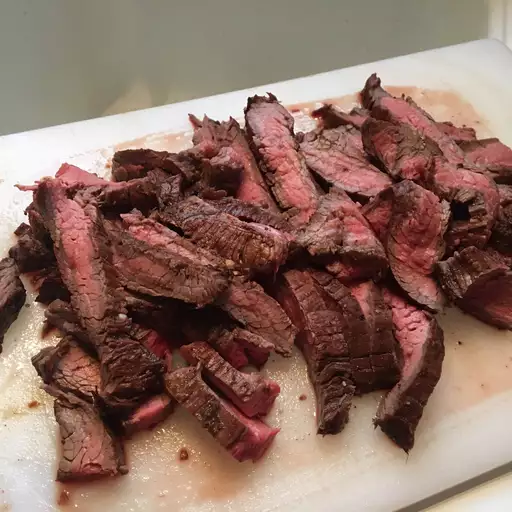
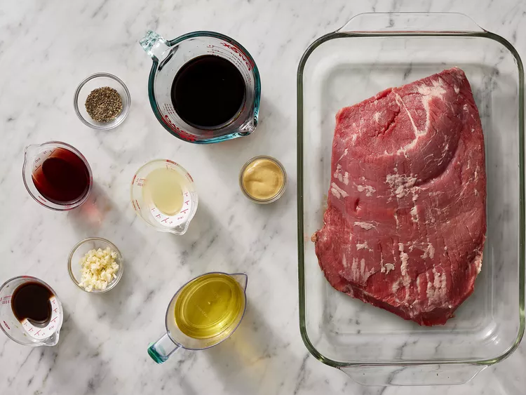
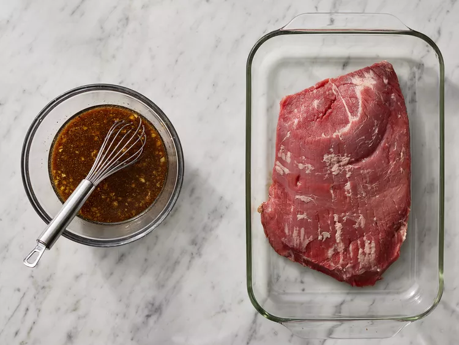
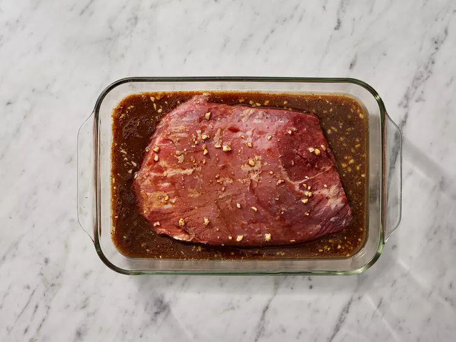
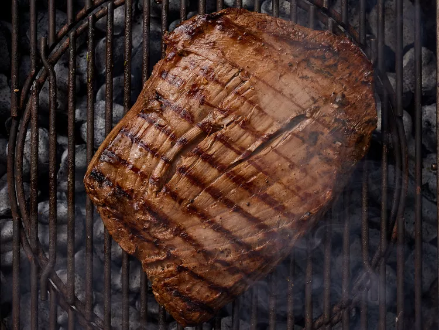
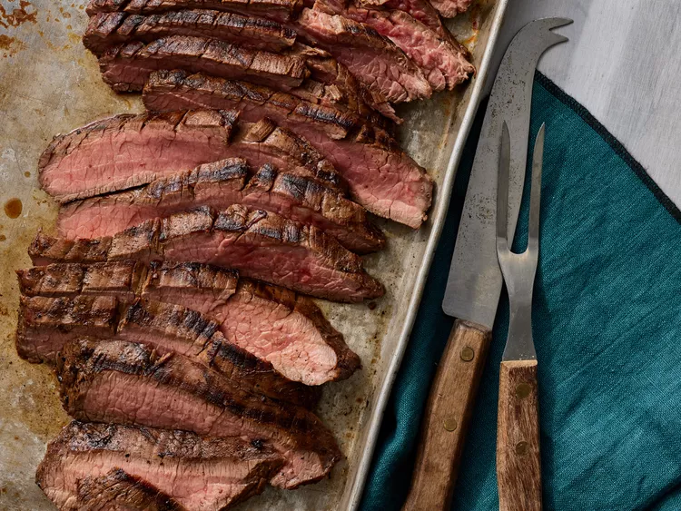

Marinated Flank Steak

Description
Flank steak is a lean cut of beef that comes from the cow's lower abdominal muscles.
It's a relatively tough cut that's low in fat, which means a few things: Flank steak doesn't need to be trimmed,
it's inexpensive compared to other cuts, and it benefits greatly from marination.
There are plenty of ways to perfectly cook a flank steak. In this recipe, the steak is grilled
— we love the bold, smoky flavor the grill gives the meat.
But you can also easily cook your flank steak in the oven or on the stove.
You'll find the step-by-step recipe for marinated and grilled flank steak below
Ingredients :
Marinade:
- ½ cup vegetable oil
- ⅓ cup low-sodium soy sauce
- ¼ cup red wine vinegar
- 2 tablespoons fresh lemon juice
- 1 ½ tablespoons Worcestershire sauce
- 1 tablespoon Dijon mustard
- 2 cloves garlic, minced
- ½ teaspoon ground black pepper
Steak:
- 1 (1 1/2-pound) flank steak
Steps :
- Step 1:gather all ingredients

- Step 2:Whisk together oil, soy sauce, vinegar, lemon juice, Worcestershire sauce,
Dijon mustard, garlic, and pepper for marinade until thoroughly combined. Place steak in a 9x13-inch glass baking dish.

- Step 3:Pour marinade over flank steak in the baking dish; turn several times to coat thoroughly with marinade.
Cover, and refrigerate for 2 to 6 hours, or up to 12 hours if you have time.

- Step 4:When ready to cook, preheat an outdoor grill for medium-high heat and lightly oil the grate.
- Step 5:Remove steak from the marinade and shake off excess. Discard the remaining marinade.
- Step 6:Cook steak on the preheated grill for about 5 minutes per side, or to desired doneness.

- Step 7:Remove from the grill and let rest for 5 minutes before slicing and serving.
- Step 8:Serve hot and enjoy!

Recipe Tip:
- You can use regular soy sauce if preferred.